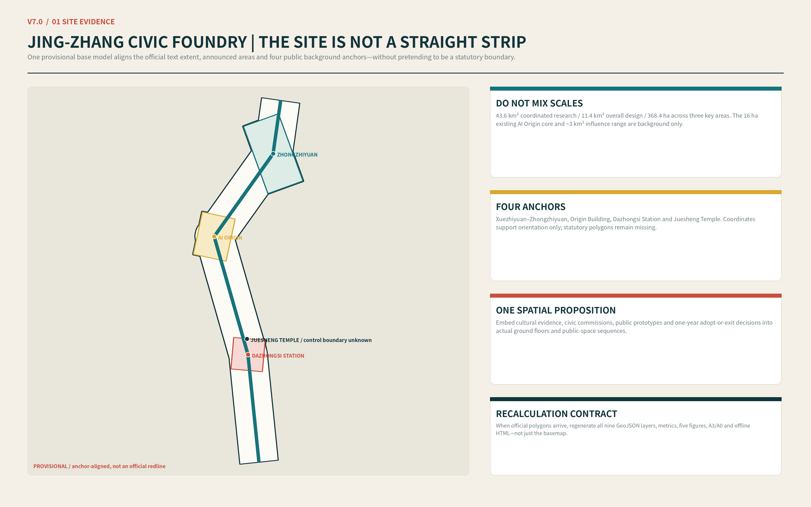
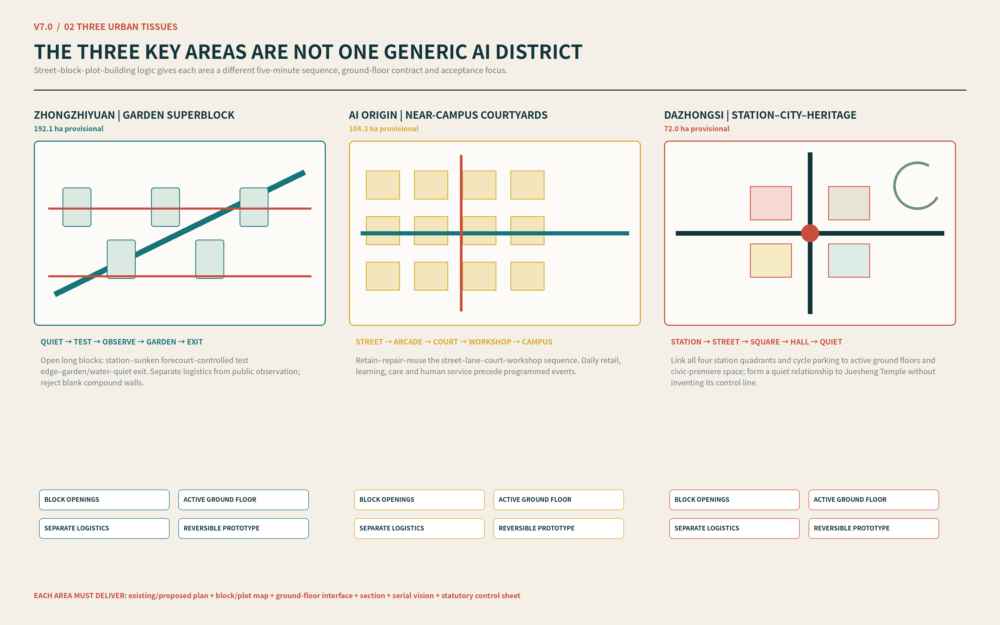
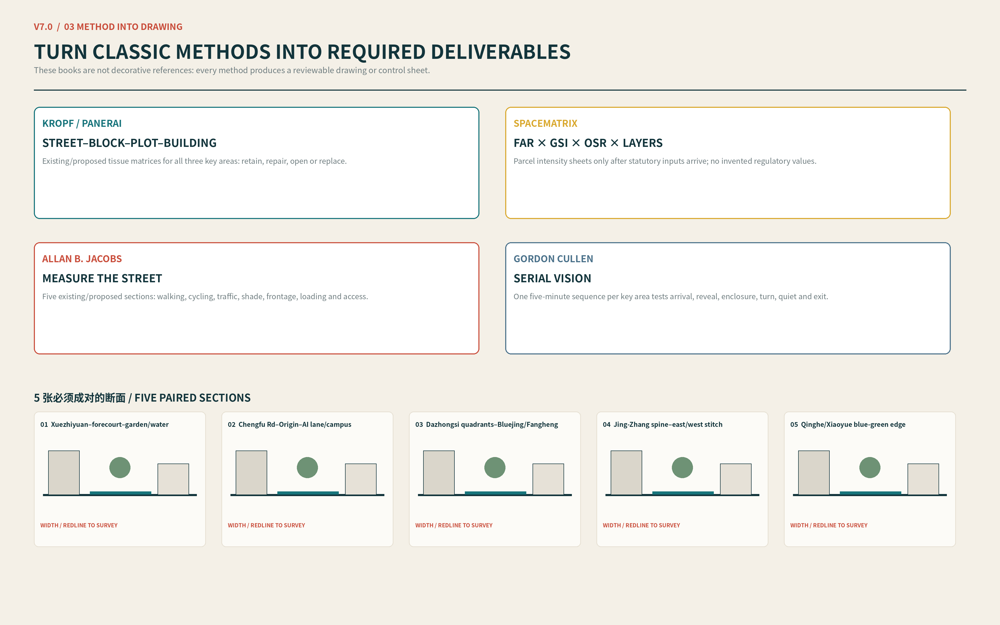
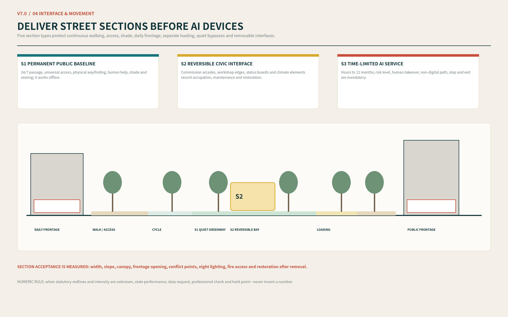
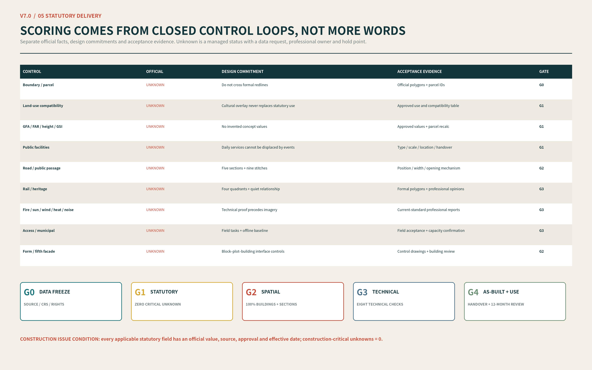

真实场地 / SITE EVIDENCE

三种城市组织 / THREE URBAN TISSUES

形态方法 / MORPHOLOGY

界面断面 / SECTIONS

法定交付 / STATUTORY DELIVERY

The name and cultural-production direction stay intact; this version rebuilds the plan around real anchors, three urban tissues, five sections and five delivery gates.




